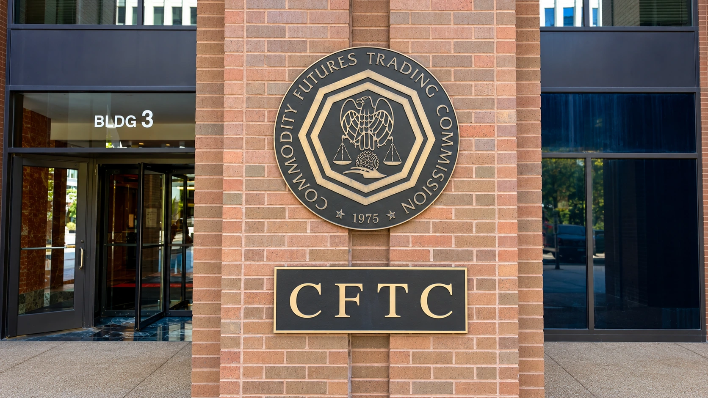

CFTC Chief Raises Liability Questions for AI Crypto Trading Agents
At a new public forum, Michael Selig examined who controls autonomous trading software. His remarks did not create a new registration rule.

CFTC Chairman Michael Selig raised questions Wednesday about who should register, who should be identified and who bears responsibility when autonomous software trades for a user. Speaking at the agency's inaugural Frontier Forum, he pointed to crypto markets as an existing source of regulatory experience and to blockchains as infrastructure that can let agents hold and trade assets without traditional intermediaries.
The remarks open a policy discussion rather than announce a new licensing requirement. Selig explicitly said he was presenting his own views as chairman, which did not necessarily reflect those of the Commodity Futures Trading Commission. His questions about agent identification and developer liability should therefore not be reported as rules that already require every AI application to register.
For crypto users and businesses, the practical issue is the transfer of control. Software that summarizes a market is performing a different function from software authorized to submit a trade or move assets. As tools move from generating an answer to exercising permissions, identifying the relevant operator, customer and decision maker becomes more consequential.
The focus is on function and control
Selig asked whether a developer becomes subject to registration when an agent identifies opportunities and executes transactions for a user. He also raised responsibility when the system acts unexpectedly and how regulators can determine whom an agent represents. He suggested an agent-identification concept as a possible question for discussion, rather than establishing a new mandatory identification standard.
He said the agency's approach should consider the functions performed, the control exercised and the economic realities of a transaction. Those factors are especially relevant when a developer publishes code, another business operates the service, and a customer authorizes activity through a wallet. The same visible interface can sit above different arrangements for custody, execution and discretion.
Our report on a trading-bot wallet incident explains why access to an account and control over its assets need to be evaluated carefully. In an agent workflow, the useful questions include which actions are authorized, how authority can be revoked and what evidence records a transaction. These are operating questions raised by the technology, not a claim that Wednesday's speech answered every legal issue.
Similar models can create shared market risks
Selig identified unexpected responses to market conditions, correlated trading by systems using similar models and the speed of autonomous transactions as potential challenges for surveillance and risk management. The concern is not limited to one agent making one bad decision. Many systems reacting similarly can make a common exposure more important than it appears when each application is evaluated alone.
That observation is relevant to markets where participants can trade continuously and move quickly between venues. A control that works during a quiet test may encounter different conditions when prices change sharply or a venue becomes unavailable. TTN's explanation of crypto liquidations describes how forced position closures can amplify an initial price move, adding a separate transmission channel to consider when assessing automated execution.
The chairman also described possible supervisory benefits. He said AI could help exchanges detect suspicious activity, clearinghouses monitor exposures and regulators identify misconduct. These are potential uses and his assessment of the agency's direction. The speech does not provide independent measurements proving that a particular agent makes a market safer or that all model-related risks have been resolved.
A public forum begins the process
The CFTC announced the forum series in September as a venue for public dialogue about changing financial technology and market structure. Wednesday's event focused on AI, increasingly autonomous systems and financial transactions. Holding that event is a concrete regulatory-engagement step, but a public discussion is different from a proposed rule, a final regulation or an enforcement finding against a named developer.
The next useful evidence will be specific agency documents explaining any proposed obligations, their legal basis and the activities covered. For now, the message for crypto businesses is that autonomous execution brings accountability and identification into the policy debate. Wednesday clarifies the questions being asked while leaving the final regulatory answers, and the responsibilities of particular participants, unresolved.
Sources and methodology
Sources checked October 28, 2026. Official decisions, company statements and reported findings are attributed in the text. Financial and operational implications are TTN editorial analysis.